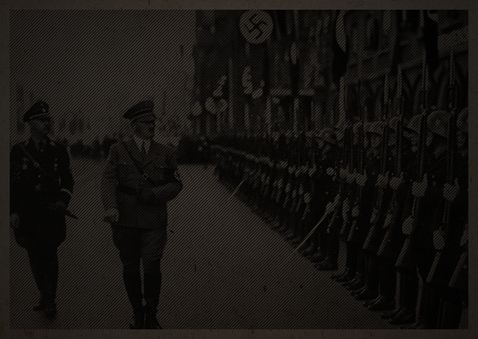

El partido nazi surgió en 1919 compuesto por antiguos combatientes de la Primera Guerra Mundial.Su dirigente, Adolf Hitler, aprovechó la crisis económica y el descontento social contra el gobierno de la república alemana para ganar adeptos. En 1934,Hitler se convirtió en Reichführer (líder del Imperio) bajo el lema “Un pueblo, un imperio, un líder”.
El programa nazi era expansionista y pangermanista. Hitler quería establecer un Reich (Imperio) milenario, uniendo a todos los pueblos de lengua y cultura alemana y dotándolos de un espacio vital. La anexión de Polonia y Checoslovaquia era fundamental para formar ese espacio y asegurar la supervivencia del pueblo alemán.
Los regímenes totalitarios se apoyaron en la propaganda para consolidar su poder e inculcar su ideología a la población. Inicialmente utilizado por la publicidad comercial, el cartel comenzó a utilizarse con fines políticos en el siglo XX y se convirtió en una herramienta privilegiada de la propaganda nazi.
El centro del cartel lo ocupa la imagen de un joven alemán, de espíritu combativo y raza aria, como Hitler quería que fuera la juventud alemana.
El centro del cartel lo ocupa la imagen de un joven alemán, de espíritu combativo y raza aria, como Hitler quería que fuera la juventud alemana.

¡Muy bien! Has identificado algunas características del nazismo.